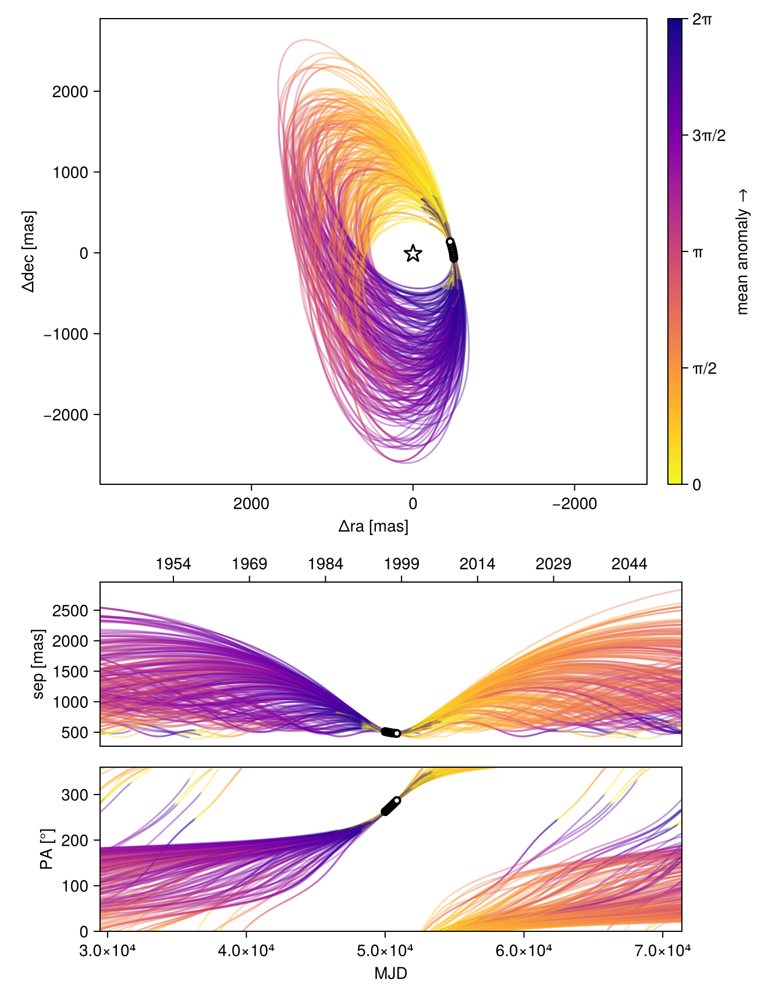
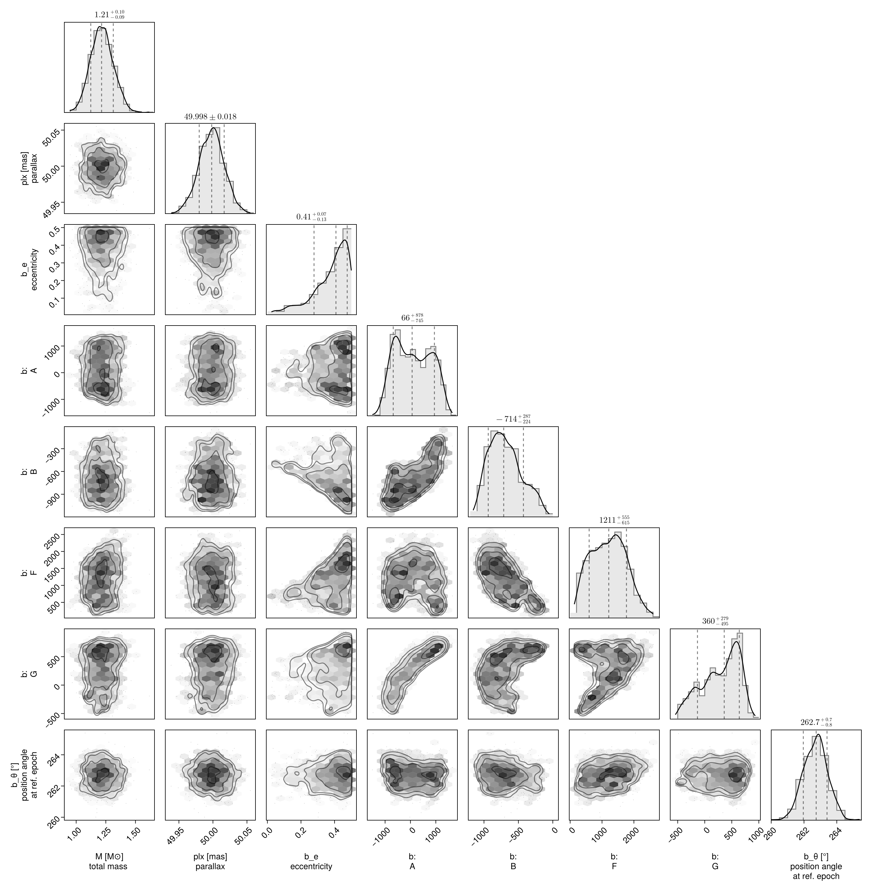
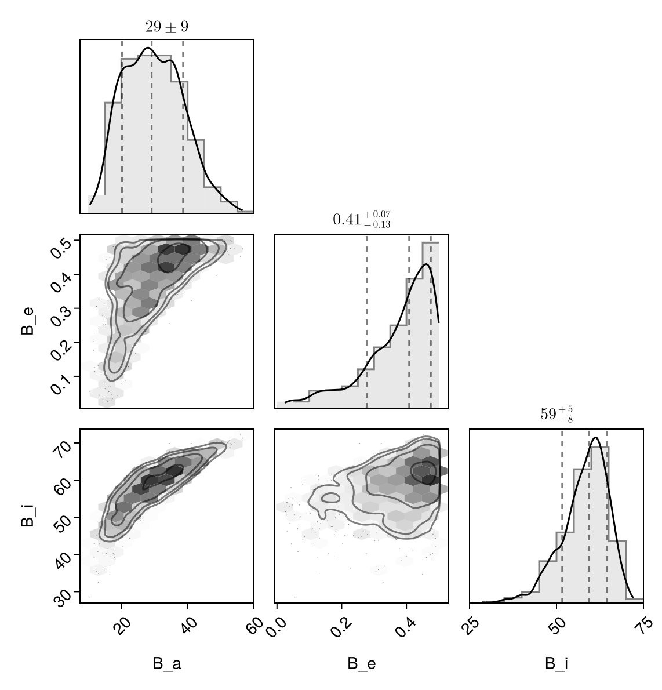

Fit with a Thiele-Innes Basis
This example shows how to fit relative astrometry using a Thiele-Innes orbital basis instead of the traditional Campbell basis used in other tutorials. The Thiele-Innes basis is more suitable then Campbell for fitting low-eccentricity orbits, because it does not have the issues where ω, Ω, and tp become degenerate as eccentricity and/or inclination fall to zero.
At the end, we will convert our results back into the Campbell basis to compare.
using Octofitter
using CairoMakie
using PairPlots
using Distributions
astrom_like = PlanetRelAstromLikelihood(
(epoch = 50000, ra = -505.7637580573554, dec = -66.92982418533026, σ_ra = 10, σ_dec = 10, cor=0),
(epoch = 50120, ra = -502.570356287689, dec = -37.47217527025044, σ_ra = 10, σ_dec = 10, cor=0),
(epoch = 50240, ra = -498.2089148883798, dec = -7.927548139010479, σ_ra = 10, σ_dec = 10, cor=0),
(epoch = 50360, ra = -492.67768482682357, dec = 21.63557115669823, σ_ra = 10, σ_dec = 10, cor=0),
(epoch = 50480, ra = -485.9770335870402, dec = 51.147204404903704, σ_ra = 10, σ_dec = 10, cor=0),
(epoch = 50600, ra = -478.1095526888573, dec = 80.53589069730698, σ_ra = 10, σ_dec = 10, cor=0),
(epoch = 50720, ra = -469.0801731788123, dec = 109.72870493064629, σ_ra = 10, σ_dec = 10, cor=0),
(epoch = 50840, ra = -458.89628893460525, dec = 138.65128697876773, σ_ra = 10, σ_dec = 10, cor=0),
)
@planet b ThieleInnesOrbit begin
e ~ Uniform(0.0, 0.5)
A ~ Normal(0, 10000) # milliarcseconds
B ~ Normal(0, 10000) # milliarcseconds
F ~ Normal(0, 10000) # milliarcseconds
G ~ Normal(0, 10000) # milliarcseconds
θ ~ UniformCircular()
tp = θ_at_epoch_to_tperi(system,b,50000.0) # reference epoch for θ. Choose an MJD date near your data.
end astrom_like
@system TutoriaPrime begin
M ~ truncated(Normal(1.2, 0.1), lower=0)
plx ~ truncated(Normal(50.0, 0.02), lower=0)
end b
model = Octofitter.LogDensityModel(TutoriaPrime)LogDensityModel for System TutoriaPrime of dimension 9 with fields .ℓπcallback and .∇ℓπcallback
We now sample from the model as usual:
using Random
Random.seed!(0)
results = octofit(model)Chains MCMC chain (1000×24×1 Array{Float64, 3}):
Iterations = 1:1:1000
Number of chains = 1
Samples per chain = 1000
Wall duration = 5.89 seconds
Compute duration = 5.89 seconds
parameters = M, plx, b_e, b_A, b_B, b_F, b_G, b_θy, b_θx, b_θ, b_tp
internals = n_steps, is_accept, acceptance_rate, hamiltonian_energy, hamiltonian_energy_error, max_hamiltonian_energy_error, tree_depth, numerical_error, step_size, nom_step_size, is_adapt, loglike, logpost, tree_depth, numerical_error
Summary Statistics
parameters mean std mcse ess_bulk ess_tail ⋯
Symbol Float64 Float64 Float64 Float64 Float64 Flo ⋯
M 1.2177 0.0949 0.0037 653.4717 606.8038 1. ⋯
plx 49.9980 0.0184 0.0006 841.2220 556.2352 1. ⋯
b_e 0.3771 0.1068 0.0056 332.2184 326.2563 1. ⋯
b_A 103.7092 696.3621 85.1805 70.7787 405.6624 1. ⋯
b_B -687.1313 237.1836 25.6082 91.5736 122.2976 1. ⋯
b_F 1201.5236 544.4188 51.8810 108.4435 155.0342 1. ⋯
b_G 292.5333 339.9343 42.6570 70.3275 66.2291 1. ⋯
b_θy -0.1263 0.0179 0.0007 704.0217 653.7774 1. ⋯
b_θx -0.9866 0.1027 0.0043 528.8894 473.8494 1. ⋯
b_θ -1.6982 0.0127 0.0005 718.9817 715.3383 1. ⋯
b_tp 18160.5390 32478.0778 2415.4791 291.4868 435.1189 1. ⋯
2 columns omitted
Quantiles
parameters 2.5% 25.0% 50.0% 75.0% 97.5% ⋯
Symbol Float64 Float64 Float64 Float64 Float64 ⋯
M 1.0390 1.1537 1.2142 1.2796 1.4004 ⋯
plx 49.9601 49.9857 49.9982 50.0099 50.0332 ⋯
b_e 0.1052 0.3194 0.4083 0.4603 0.4955 ⋯
b_A -1016.6391 -515.4038 65.7872 715.6291 1276.8913 ⋯
b_B -1061.4420 -867.7430 -713.6337 -537.6863 -199.0197 ⋯
b_F 280.0931 753.7802 1211.3819 1606.3556 2254.4365 ⋯
b_G -412.7655 54.4041 360.4887 577.6979 774.6298 ⋯
b_θy -0.1630 -0.1377 -0.1254 -0.1145 -0.0949 ⋯
b_θx -1.2098 -1.0562 -0.9796 -0.9135 -0.8056 ⋯
b_θ -1.7229 -1.7068 -1.6975 -1.6897 -1.6738 ⋯
b_tp -50436.1768 -8787.3207 24148.6918 48588.9817 49859.8856 ⋯
Notice that the fit was very very fast! The Thiele-Innes orbital paramterization is easier to explore than the default Campbell in many cases.
We now display the results:
octoplot(model,results)
octocorner(model, results, small=false)
Conversion back to Campbell Elements
To convert our chain into the more familiar Campbell parameterization, we have to do a few steps. We start by turning the chain table into a an array of orbit objects, and then convert their type:
orbits_ti = Octofitter.construct_elements(results, :b, :) # colon means all rows1000-element Vector{ThieleInnesOrbit{Float64}}:
ThieleInnesOrbit{Float64}(0.2915752371687446, 48684.031917445274, 1.274260901181057, 50.00454206789277, -515.3541414266224, -774.1246230036718, 1100.4975132983013, 50.53661478929048, -17.945478184382434, -13.511090636132565, 42510.4334345765, 0.053984027900674594, 1.3502462761546659)
ThieleInnesOrbit{Float64}(0.23268186902774304, 4894.702806308167, 1.201809680650841, 49.96728834632064, 228.42360337423742, -600.0723165969862, 1298.95279887985, 304.7377046749962, -23.486964920090386, 1.9414331301529986, 46152.26704554626, 0.049724197130710766, 1.2674702487418759)
ThieleInnesOrbit{Float64}(0.4941761706488629, -5480.656547500854, 1.2071094027838492, 50.03562130262263, 1102.3357130022048, -546.6402532779455, 1100.3418463013363, 700.8582496555728, -19.264583954521694, 17.205617595387064, 58042.168106797806, 0.039538227110664646, 1.7187046834530144)
ThieleInnesOrbit{Float64}(0.43036755722370296, -20189.15710409821, 1.233147565996394, 49.95938326372934, 1440.5059206853457, -350.1856282793695, 1157.5718802544384, 714.917838622741, -22.41811358926102, 25.326669413781847, 74594.72523730852, 0.030764701087124088, 1.5846248693473626)
ThieleInnesOrbit{Float64}(0.43056480867665553, -10985.13043313467, 1.2821809862016833, 49.992084289290325, 1346.1964597012345, -337.5110472762933, 1047.674377681144, 714.3427060238839, -20.211407864598097, 23.14825974391935, 64908.1489778066, 0.03535587535220909, 1.5850085784889931)
ThieleInnesOrbit{Float64}(0.34663730579661545, -2623.6748875125195, 1.1699164140523677, 49.99705542086976, 1134.813375424247, -330.25036715251497, 991.7183667849006, 640.0892512403678, -19.102997263751508, 19.141147554212083, 56580.240389185215, 0.04055982104029013, 1.4356486075016164)
ThieleInnesOrbit{Float64}(0.45842415802817554, -29978.284717935763, 1.3617436428191487, 49.99886801993519, 1423.239202848881, -410.70086432689516, 1480.276195015722, 792.6940668296253, -29.12869209146846, 24.46120990367896, 83822.01717062139, 0.027378062495569212, 1.641013988011205)
ThieleInnesOrbit{Float64}(0.40416965691182677, -11897.35613266268, 1.1235336593383143, 49.97864447880837, 624.038068310719, -620.5640743650717, 1456.4229437038525, 600.8868625105574, -27.30261225716941, 7.859067694785241, 63809.25464195245, 0.03596475836426928, 1.5351417531797111)
ThieleInnesOrbit{Float64}(0.4887052725457554, -38610.30064441702, 1.2106413478888547, 50.0243145393048, 855.4727539669905, -706.2782829807363, 1877.4647159802876, 741.5612005546759, -35.81095054264885, 12.078086687718407, 90745.92167995764, 0.025289119137447715, 1.7063523155271043)
ThieleInnesOrbit{Float64}(0.4787132232827218, -45607.51868633021, 1.2349128561816376, 49.99666529503752, 996.447648550708, -628.9274612591523, 1945.4148576852335, 798.0333175502325, -37.97859761450479, 15.132634976114721, 98215.91347444452, 0.023365708706655462, 1.6842386293720224)
⋮
ThieleInnesOrbit{Float64}(0.4747139921356263, 25112.104143065237, 1.1097754180855341, 49.98841991184447, 422.3374966349877, -740.105933936056, 543.0005138955656, 487.50722693634066, -5.157386587946915, -10.201945000686838, 26058.31700938954, 0.08806725406614085, 1.6755445678922711)
ThieleInnesOrbit{Float64}(0.4821685681598685, 21994.08246828775, 1.124005772415039, 50.00445380666189, 199.18763933925737, -889.3224757956925, 641.5518790768783, 339.37338582912355, -5.624144549819545, -12.374658963706743, 28697.46973537013, 0.07996817997418995, 1.6918217170732892)
ThieleInnesOrbit{Float64}(0.4169925987277198, 49850.06584397053, 1.1205284706250624, 49.98251800539789, -175.41415190670338, -813.178577148683, 577.0967719968713, -169.48338039714926, 1.2661579177687983, -11.567249984290454, 23529.64810846786, 0.09753160837862526, 1.5590023033522056)
ThieleInnesOrbit{Float64}(0.45156304923495594, 49135.77993235672, 1.119119454653436, 50.02220594395777, -501.8714217189563, -892.5852996160361, 706.8223185933086, -221.89250046700994, -4.243442963970807, -14.755646904891004, 33003.07398356991, 0.06953547496043617, 1.626876546869329)
ThieleInnesOrbit{Float64}(0.4056686044693191, 48830.26448392978, 1.1347682800564898, 49.97611085484023, -594.7551267125409, -818.8743729130799, 787.7916942304234, -217.47099769283986, -8.067935743570759, -14.41456578914896, 34896.6672393373, 0.06576228064595915, 1.5378965981608974)
ThieleInnesOrbit{Float64}(0.08727151483117909, 49928.931579182885, 1.1131273653681417, 50.02162258439777, -83.36775613209483, -553.3125868226956, 1040.3800085252637, 97.42924391562968, -17.918756168034918, -3.1368563482712015, 33609.88769223935, 0.06828003847010312, 1.0914358199129506)
ThieleInnesOrbit{Float64}(0.4906203291989194, 49609.01336209698, 1.1223476703867414, 49.9856781111924, -322.62981887721037, -1053.717154988044, 1580.3755209425779, 283.6969783645216, -26.387033776384243, -12.267785701178678, 69513.30560755164, 0.03301359940437995, 1.7106561211455553)
ThieleInnesOrbit{Float64}(0.372814912808578, 49306.86463327475, 1.2877148639960803, 49.98698514512408, -395.3430268330362, -831.1483766279073, 1365.483940339601, 61.61533531380261, -22.736407816284302, -10.403646171072332, 50934.498668833316, 0.045055600517889885, 1.4794767084623075)
ThieleInnesOrbit{Float64}(0.35041066862094555, 48249.42924507385, 1.1178428092027528, 49.99308515351177, -689.1368580676891, -750.5309889084326, 770.8512955398611, -223.22111111304963, -9.308740587764763, -15.632116495124304, 36639.61216668899, 0.06263397151043944, 1.441828110206772)Here is one of those entries:
display(orbits_ti[1])We can now make a table of results (and visualize them in a corner plot) by querying properties of these objects:
table = (;
B_a = semimajoraxis.(orbits_ti),
B_e = eccentricity.(orbits_ti),
B_i = rad2deg.(inclination.(orbits_ti)),
)
pairplot(table)
We can also convert the orbit objects into Campbell parameters:
orbits_campbell = Visual{KepOrbit}.(orbits_ti)
orbits_campbell[1]KepOrbit{Float64}
─────────────────────────
a [au ] = 25.8
e = 0.29157524
i [° ] = 60.4
ω [° ] = 233.0
Ω [° ] = 23.1
tp [day] = 48700.0
M [M⊙ ] = 1.27
period [yrs ] : 116.4
mean motion [°/yr] : 3.09
──────────────────────────
plx [mas] = 50.0
distance [pc ] : 20.0
──────────────────────────